Ubuntu
Paso 1: Creación de la máquina virtual
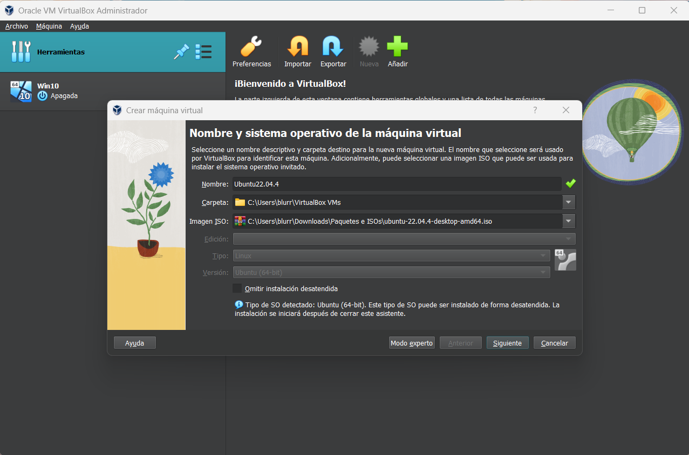Para instalar Ubuntu lo primero que debemos hacer es crear una máquina virtual desde Oracle VM.
Seleccionamos la opción “Nueva” en el menú superior central. Se abrirá una ventana donde deberemos determinar el nombre de la máquina virtual, dónde se guardará esta (por defecto ya tiene seleccionada una carpeta), y la imagen ISO que usaremos para instalar el Sistema Operativo.
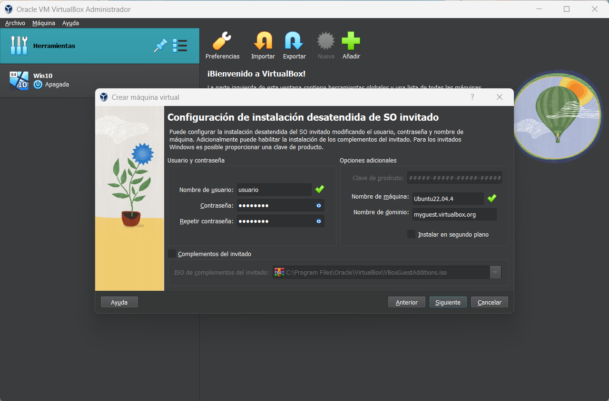La siguiente ventana nos dará a elegir un nombre de usuario y contraseña que podrás seleccionar a tu gusto. Recomendamos que tengáis cuidado a la hora de seleccionar una contraseña y elijáis una que recordéis, ya que será la que usemos dentro de Ubuntu para realizar ciertas acciones como su (superuser)/root. No es necesario introducir una clave de producto. Ubuntu, como dijimos antes, es gratuito.
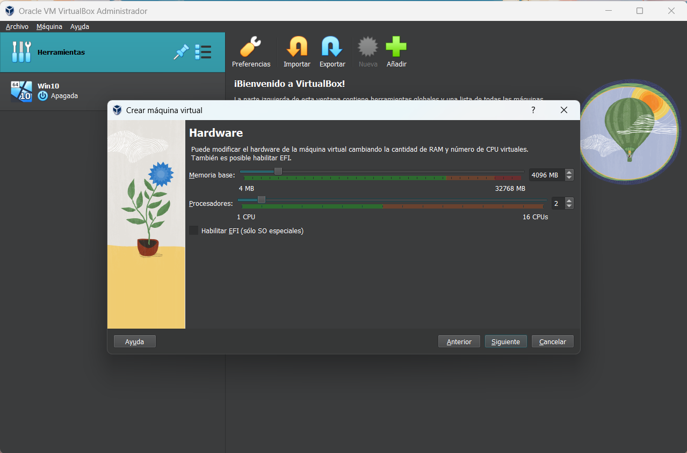En este paso procederemos a asignarle parte de los recursos de nuestro ordenador a la máquina virtual que contendrá Ubuntu. Cuántos recursos asignes depende de la capacidad de tu sistema y cuánto quieras otorgarle. En nuestro caso vamos a asignar 4 GB de Memoria RAM y 2 núcleos de la CPU, como en el caso anterior. Con esto, podrá desempeñar correctamente su función.
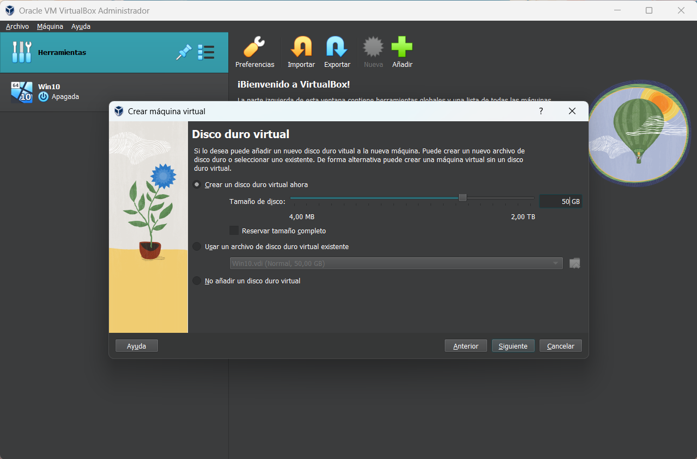En el siguiente punto de la creación podremos asignar cuánta memoria queremos asignarle al disco duro virtual de la máquina. Recomendamos dejar desmarcada la casilla "Reservar tamaño completo", para que el sistema solo use la memoria que realmente esté usando la máquina virtual.
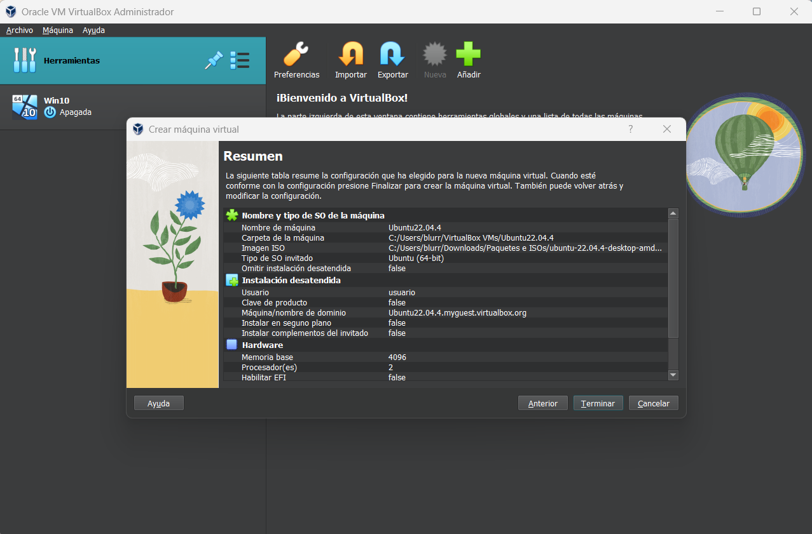Por último, nos aparecerá un resumen con la configuración de la máquina virtual que estamos a punto de crear. Comprobaremos que todo está como debería y pulsamos en "Terminar". Seguidamente, comenzará la instalación del Sistema Operativo.
Paso 2: Instalación y configuración de Ubuntu
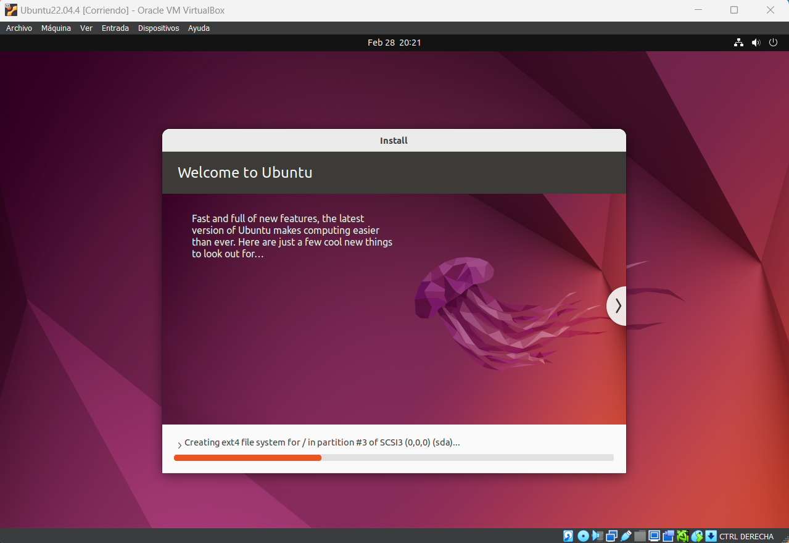Automáticamente la máquina virtual arrancará y comenzará la instalación de Ubuntu. El asistente de instalación avanzará sin necesidad de que nosotros intervengamos demasiado.
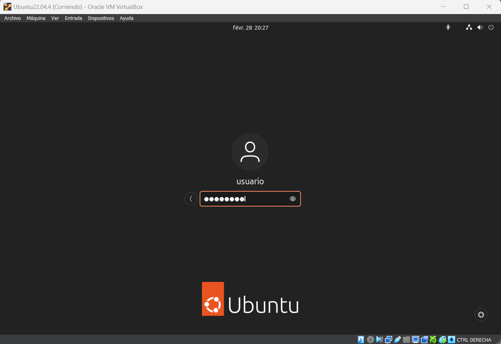Una vez haya terminado la instalación, tendremos delante de nosotros la pantalla de inicio de Ubuntu. Seleccionamos el usuario que usamos antes e introducimos la contraseña. Pulsamos "Enter" para acceder al sistema operativo.
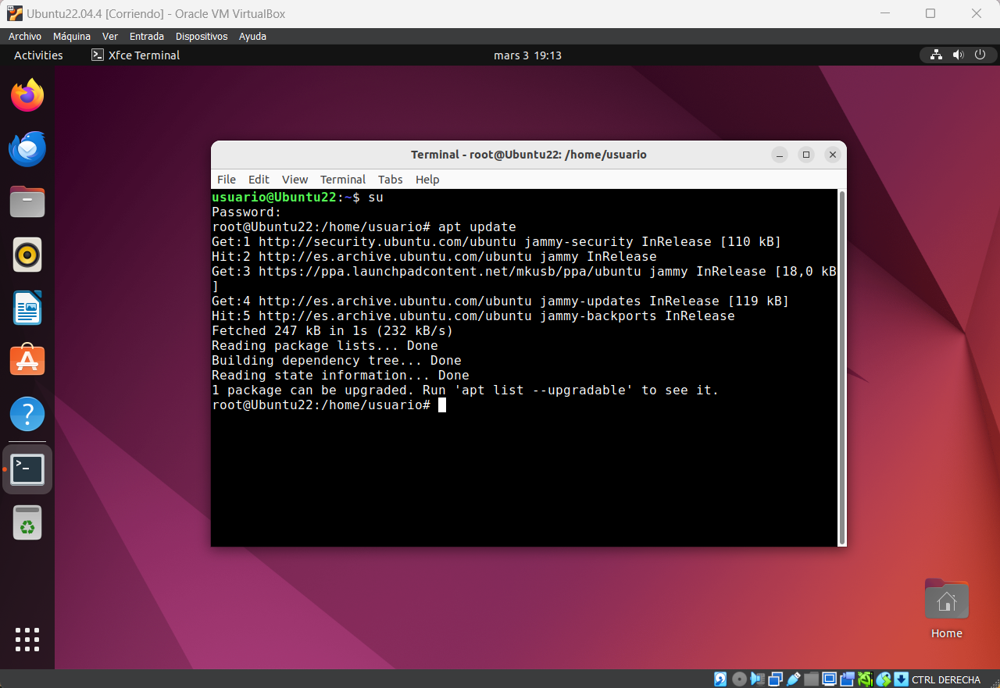Antes de nada, como con Windows, recomendamos que valores si es necesario que cambies las opciones de idioma y disposición del teclado para poder trabajar cómoda y correctamente.
Procederemos a abrir la terminal de Ubuntu. Podemos hacerlo de varias maneras: accediendo al icono de "aplicaciones" abajo a la izquierda, en la barra lateral; haciendo clic en "Actividades" y escribiendo en la barra de búsqueda "Terminal"; o usando el atajo de teclado: Ctrl+Alt+T.
En ella escribiremos "su" para entrar en modo superuser. Nos pedirá introducir la contraseña de administrador que definimos al crear la máquina virtual.
Escribiremos entonces "apt update" y pulsaremos "Enter". Esto actualizará la lista de paquetes disponibles en los repositorios configurados en el sistema.
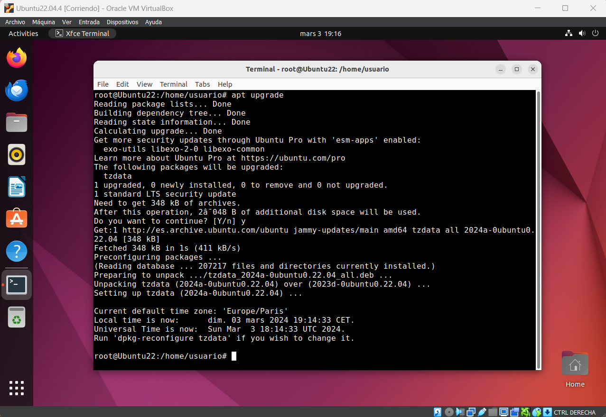Y, ahora, para terminar de actualizar nuestro sistema, escribiremos en la terminal "apt upgrade" y pulsaremos "Enter". Nos pedirá una pequeña confirmación. Deberemos escribir "Y" en la terminal y pulsar "Enter" para dar paso a la actualización de los paquetes instalados en el sistema.
Una vez hecho esto ya tenemos nuestro sistema instalado. Solo queda, como con Windows, añadir la máquina virtual a nuestra Red NAT.
Paso 3: Añadir Ubuntu a la Red NAT virtual.
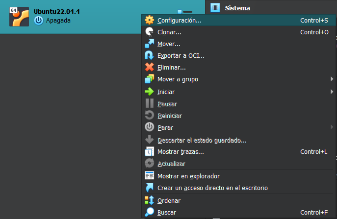Con la máquina virtual apagada, haremos click derecho sobre ella en Oracle VM VirtualBox. Accederemos a la Configuración haciendo click sobre ella en el menú contextual.
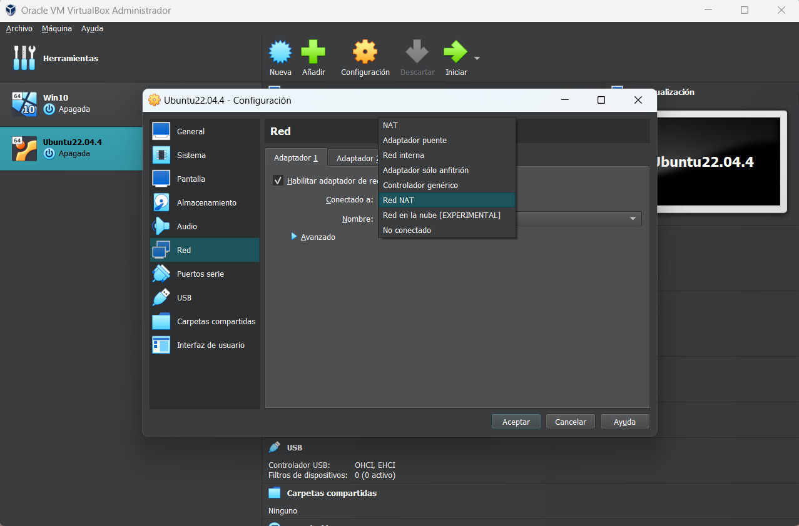En el menú de configuración buscaremos el apartado "Red", a la izquierda. Allí, en la pestaña "Adaptador 1" haremos click al menú desplegable que se encuentra en "Conectado a:" y seleccionaremos "Red NAT" Ya que solo disponemos de una, la elegirá automáticamente.
Ambas máquinas virtuales están ya preparadas. Vamos a por el último paso. Instalar, configurar y usar Samba.